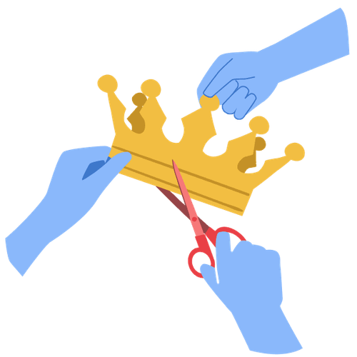

Mit der Academy erhaltet ihr im Business-Plan praxisnahe Lernmodule rund um Facilitation und wirksame Transformation.
Gemeinsam mit 9 Spaces zeigt Plan International Deutschland, wie wertebasiertes Arbeiten Orientierung gibt – nach innen wie nach außen.

Reflektiert mit diesem Tool, an welchen Stellen Macht bei euch im Team nicht sinnvoll verteilt ist – und vergebt sie neu.
Beim Thema Führung ist Ego oft ein Problem. Unser Tool hilft dabei, herauszufinden, ob du als Führungskraft dein Ego im Griff hast.
Dieses Tool hilft euch dabei, euer Level an Diversität und Inklusion einzuschätzen.
Dieses Tool stärkt dein Bewusstsein für weiße Privilegien.